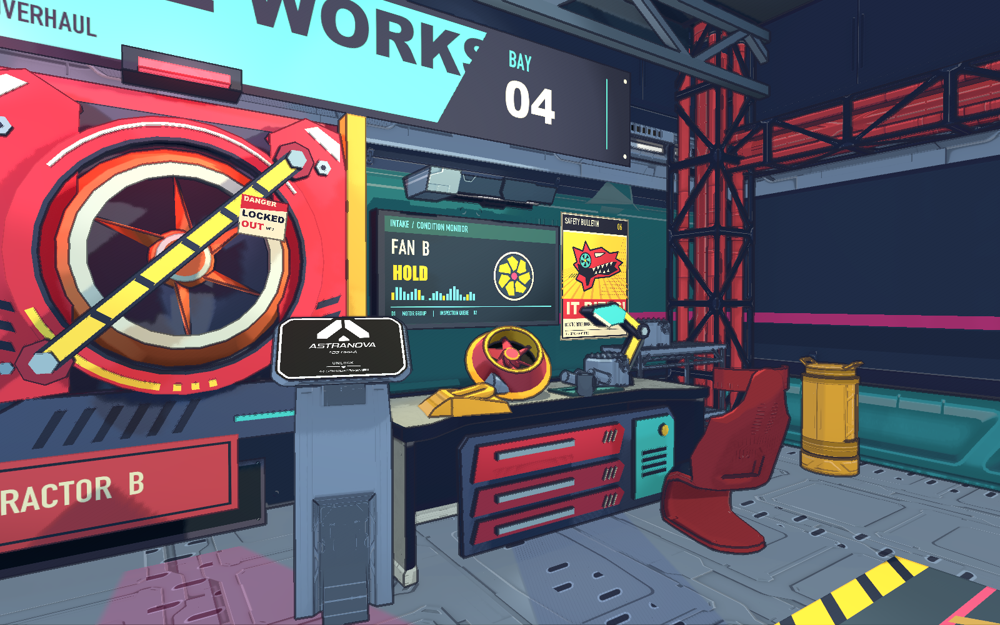
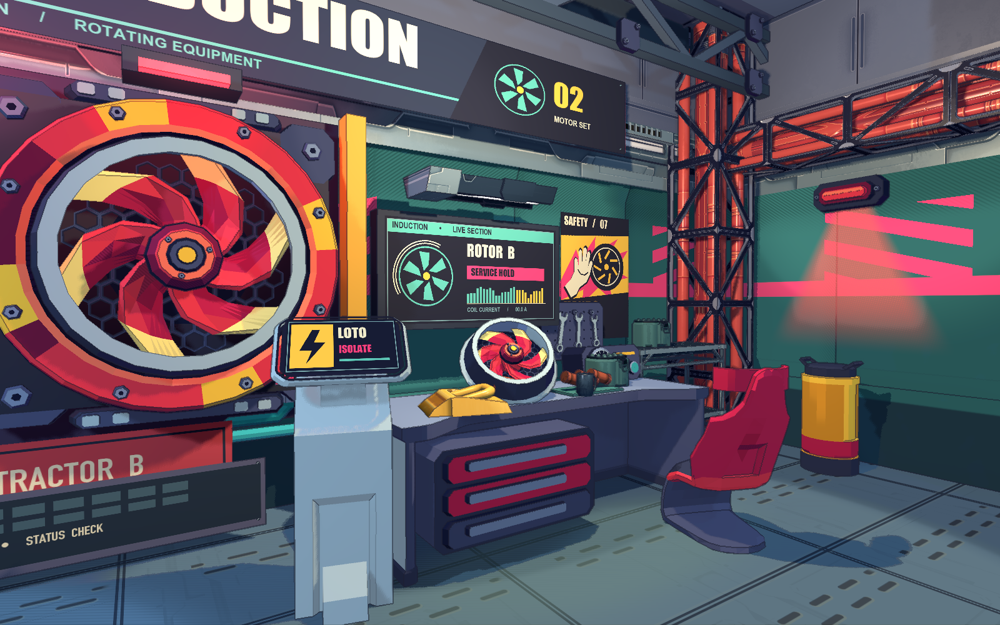
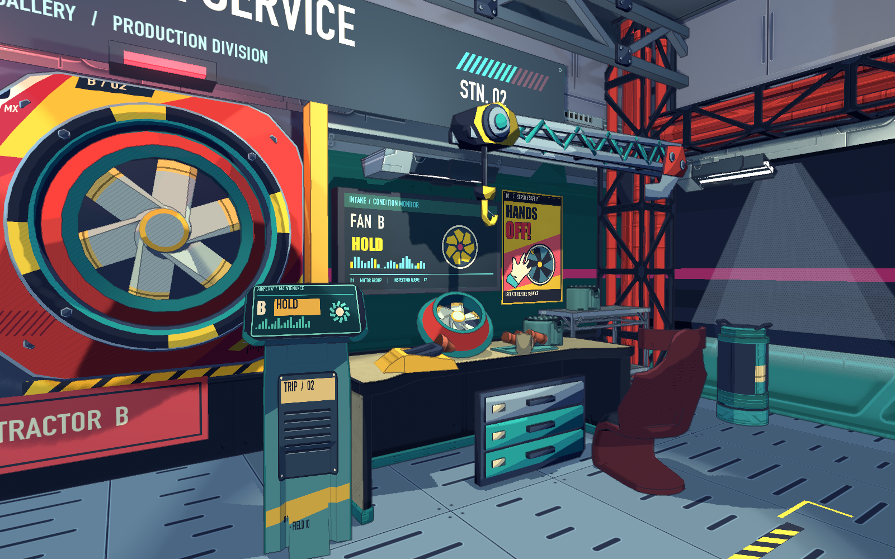
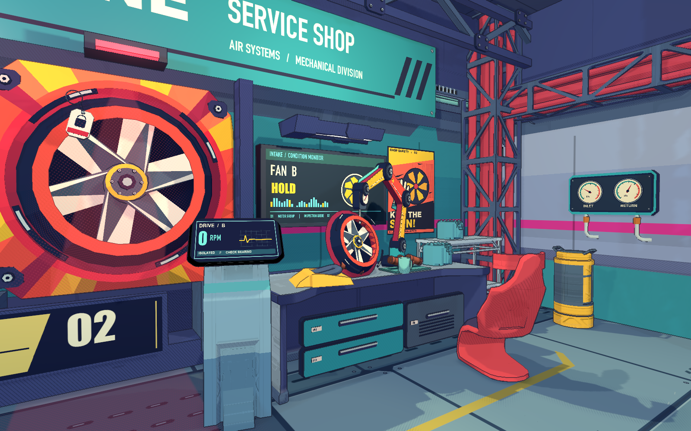
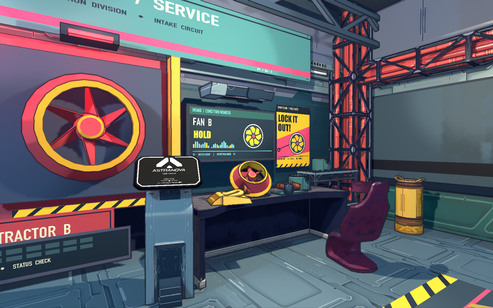
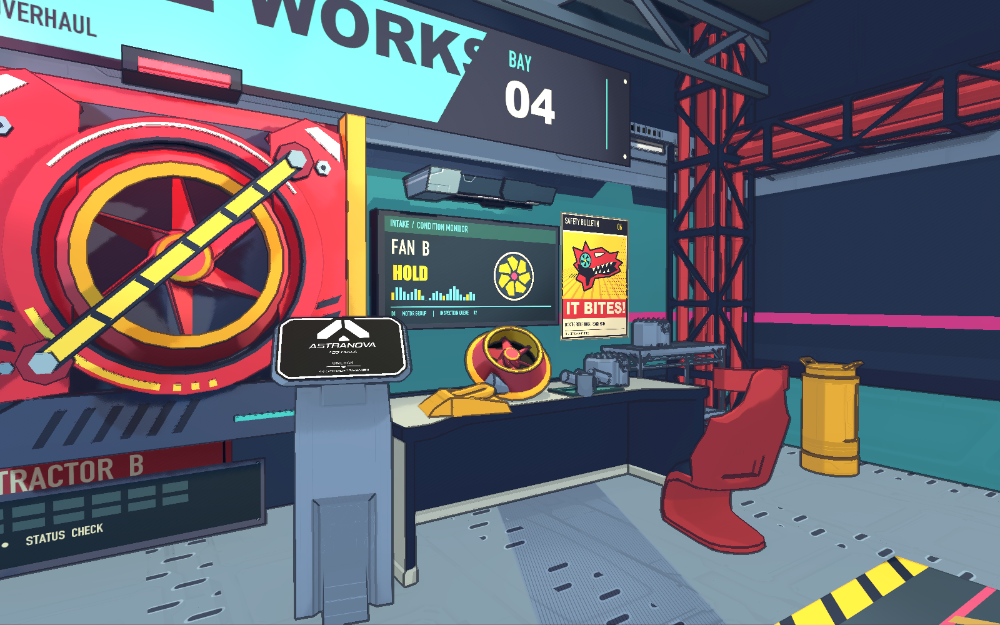
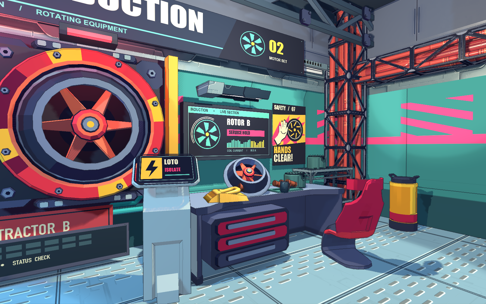
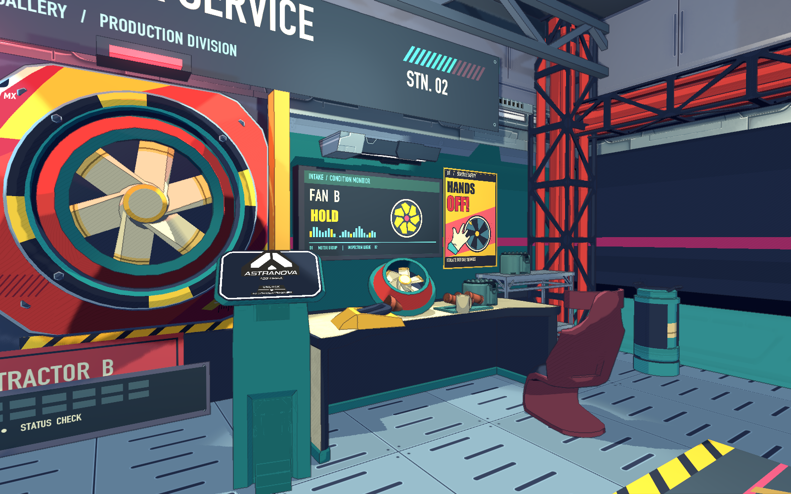
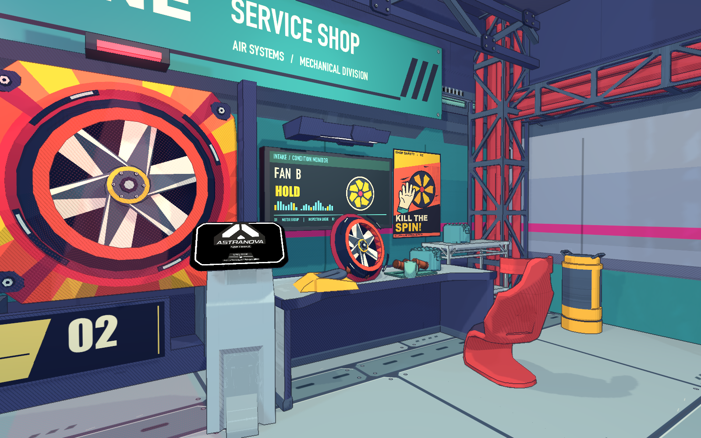

low · 9.8 分钟


最快、用量最低。锁杆和齿口安全海报交代了检修状态；造型确有改变，但地面浮雕、旧品牌屏和扁平机壳仍像不同材质体系。
适合快速提案；完整局部的风格统一仍不足。
2026-11-19 · GPT‑6.2 ASTRA · GODOT 4.7.2 / METAL FORWARD+ · 1600 × 1000
本局部暂选 high 作为后续完整局部制作的默认档。独立视觉评审在未获知 effort 与用量的情况下，将四组排为 xhigh、high、medium、low；前两名很接近。xhigh 比 high 多约 34.5% 墙钟时间与 37.9% 输出 token，主要换来整体统一性和近景细节的进一步改善。这里的百分比不是费用比例。
四个全新 subagent 都从同一份既有 Hi-Fi Rush 场景继续修改，收到相同批评：模型与材质仍像 PBR 素材套 outline。每组各做两轮，没有得到分组美术反馈；同一原白盒、参考图、素材池和三个固定相机均保留。旧版 effort 虽已核实为 low，输入和工作量不同，因此正式对照采用本次重新跑的 low。
切换机位会同时切换四张图。点击图片查看原始 PNG；没有后期修图。材质、几何和灯光共同变化，因此这是整体制作结果的比较。

最快、用量最低。锁杆和齿口安全海报交代了检修状态；造型确有改变，但地面浮雕、旧品牌屏和扁平机壳仍像不同材质体系。
适合快速提案；完整局部的风格统一仍不足。

弯叶叠压、浅叶尖和后置蜂窝网是四组最出色的风机特写。周边管道/红箱仍留有细碎金属高光，浅终端柱和桶又过于平整，整体未达到主机的完成度。
单件机械造型有优势；这次总耗时已接近 high。

风机分层、吊臂、终端、抽屉和门锁共享比较一致的画法，点阵光锥最接近主参考。槽纹地面重复较密，入口双列文字偏抢眼。
本次暂选：完整局部的质量、时间与用量较均衡。

整片浅地板与深顶梁让主机更突出；叶片折面、椅壳排线、机械臂和门口导向在三个机位更统一。右墙/浅柜偏平亮，机械臂遮住部分海报。
综合质量略优于 high，额外消耗更高；适合重点局部。
下图随上方机位同步切换。起点来自上一轮已提交的 Hi-Fi Rush 第三轮；四组冻结资源均保留。

主参考来自 CGWORLD 对 Tango 背景团队的访谈：深色桁架、青绿墙、洋红标记与墙灯光锥。辅助生产线图用于研究大机器的体面和剪影；角色、UI 不在本次制作范围。参考图需联网，版权归原权利人。

下表来自本次四个子会话的实际运行记录，模型和 effort 均已核对。输出包含推理；“其中推理”不再加到输出之上。缓存输入在多轮工具对话中会反复计数，不能把总 token 直接当成账单。本次没有逐任务订阅扣费，也没有套用假设的 API 单价。
| effort | 墙钟分钟 | 未缓存输入 | 缓存输入 | 输出（含推理） | 其中推理 | 图形捕获次数 |
|---|---|---|---|---|---|---|
| low | 9.77 | 63,422 | 1,715,584 | 14,556 | 1,181 | 2 |
| medium | 16.07 | 103,386 | 2,754,304 | 26,016 | 5,688 | 2 |
| high | 17.95 | 137,501 | 4,043,520 | 30,142 | 6,925 | 2 |
| xhigh | 24.15 | 152,279 | 5,905,536 | 41,573 | 10,660 | 3 |
每组交付首轮和终版各三张图。xhigh 做过一次额外技术重拍：修复终端材质槽裁切和牌面穿插；最终保留六张交付图，累计写图九张。所有捕获 GPU 队列等待均为零。其它 Python 依赖探测和导入告警见各组 README，未阻塞交付。
为什么选 high：medium 的弯叶特写最出色，但周边仍保留较多写实高光和扁平器具；high 在终端、抽屉、门锁和局部光影上处理得更连贯，比 medium 多约 1.9 分钟与 15.9% 输出 token。xhigh 整体略好，但 high 已覆盖本次最主要的风格统一收益。low 资源消耗最低，适合快速提案；这次仍未达到完整局部的统一程度。
输入消耗也随档位变化，已全部列出；不能用输出比例代替总费用。high 是按本次视觉目标、时间和用量综合做的暂定取舍，用户尚未确认美术。原始数据见 usage.json；独立视觉评审另计组织开销，不计入任一生产组。
这里同步使用上方选中的机位。各组自行看图后只做一次美术修订；技术故障修复另记。父 agent 在制作完成前没有给某组额外造型或材质方案。




独立评审只按图片给出 C > A > D > B，再映射为 xhigh > high > medium > low。它认为前两名接近；若只看风机特写，medium 可以排第一。这说明本次结论取决于“整块局部是否统一”，而非某一个漂亮道具。评审依据与逐组画面证据。
每档只有一次独立样本，没有统计上的最优保证。low/high/xhigh 同时启动，medium 在 low 结束后启动；模型制作并行，图形捕获串行。前三组曾遇到父 agent 准备时漏拷的白盒依赖，已统一补齐，这不是模型失败；原始墙钟保留该开销。时间含工具、导入、审批与返工，初始缓存命中也不同。
四组新增的轮廓、材质、图形和光影都有可见进展；新的 low 也优于旧起点，因此从旧版到本轮的全部收益不能归因于提高 effort。仍缺少原作大机械、机械臂和通道在纵深上交错的空间构图。没有扩展全场，也没有验证移动镜头稳定性或其它渲染后端。
用 Godot 4.7.2 导入各工程，F5 打开最终场景。起点与首轮分别打开 scenes/start.tscn、scenes/pass01.tscn 后按 F6；Views 下有 overall、detail、transition 三个固定机位。主工程、旧 Hi-Fi Rush、Control 和其它方向均保留。父 agent 统一默认入口时没有更改已审阅场景或图片。
各制作 agent 核对了原 17 个白盒实体、碰撞及相机，父 agent 确认四组冻结场景与已有源素材未被改写，并查看全部十二张终图。检查仅限导入、加载、实际渲染和直接受影响的约束，没有新建控制器或玩法回归套件。
工程索引与阶段提交 · 共同任务和范围 · 实际档位映射 · 上一轮三游戏参考试跑